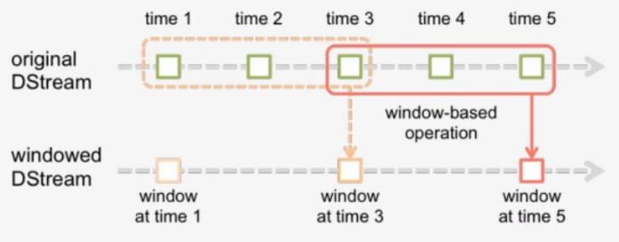

3、Spark Streaming的状态操作
在Spark Streaming中存在两种状态操作
- UpdateStateByKey
- Windows操作
使用有状态的transformation，需要开启Checkpoint
- spark streaming 的容错机制
- 它将足够多的信息checkpoint到某些具备容错性的存储系统如hdfs上，以便出错时能够迅速恢复
3.1 updateStateByKey
Spark Streaming实现的是一个实时批处理操作，每隔一段时间将数据进行打包，封装成RDD，是无状态的。
无状态：指的是每个时间片段的数据之间是没有关联的。
需求：想要将一个大时间段（1天），即多个小时间段的数据内的数据持续进行累积操作
一般超过一天都是用RDD或Spark SQL来进行离线批处理
如果没有UpdateStateByKey，我们需要将每一秒的数据计算好放入mysql中取，再用mysql来进行统计计算
Spark Streaming中提供这种状态保护机制，即updateStateByKey
步骤：
- 首先，要定义一个state，可以是任意的数据类型
- 其次，要定义state更新函数--指定一个函数如何使用之前的state和新值来更新state
- 对于每个batch，Spark都会为每个之前已经存在的key去应用一次state更新函数，无论这个key在batch中是否有新的数据。如果state更新函数返回none，那么key对应的state就会被删除
- 对于每个新出现的key，也会执行state更新函数
举例：词统计。
案例：updateStateByKey
需求：监听网络端口的数据，获取到每个批次的出现的单词数量，并且需要把每个批次的信息保留下来
代码
import os
# 配置spark driver和pyspark运行时，所使用的python解释器路径
PYSPARK_PYTHON = "/miniconda2/envs/py365/bin/python"
JAVA_HOME='/root/bigdata/jdk'
SPARK_HOME = "/root/bigdata/spark"
# 当存在多个版本时，不指定很可能会导致出错
os.environ["PYSPARK_PYTHON"] = PYSPARK_PYTHON
os.environ["PYSPARK_DRIVER_PYTHON"] = PYSPARK_PYTHON
os.environ['JAVA_HOME']=JAVA_HOME
os.environ["SPARK_HOME"] = SPARK_HOME
from pyspark.streaming import StreamingContext
from pyspark.sql.session import SparkSession
# 创建SparkContext
spark = SparkSession.builder.master("local[2]").getOrCreate()
sc = spark.sparkContext
ssc = StreamingContext(sc, 3)
#开启检查点
ssc.checkpoint("checkpoint")
#定义state更新函数
def updateFunc(new_values, last_sum):
return sum(new_values) + (last_sum or 0)
lines = ssc.socketTextStream("localhost", 9999)
# 对数据以空格进行拆分，分为多个单词
counts = lines.flatMap(lambda line: line.split(" ")) \
.map(lambda word: (word, 1)) \
.updateStateByKey(updateFunc=updateFunc)#应用updateStateByKey函数
counts.pprint()
ssc.start()
ssc.awaitTermination()
3.2 Windows
- 窗口长度L：运算的数据量
- 滑动间隔G：控制每隔多长时间做一次运算
每隔G秒，统计最近L秒的数据

操作细节
- Window操作是基于窗口长度和滑动间隔来工作的
- 窗口的长度控制考虑前几批次数据量
- 默认为批处理的滑动间隔来确定计算结果的频率
相关函数

- Smart computation
- invAddFunc
reduceByKeyAndWindow(func,invFunc,windowLength,slideInterval,[num,Tasks])
func:正向操作，类似于updateStateByKey
invFunc：反向操作

例如在热词时，在上一个窗口中可能是热词，这个一个窗口中可能不是热词，就需要在这个窗口中把该次剔除掉
典型案例：热点搜索词滑动统计，每隔10秒，统计最近60秒钟的搜索词的搜索频次，并打印出最靠前的3个搜索词出现次数。

案例
监听网络端口的数据，每隔3秒统计前6秒出现的单词数量
import os
# 配置spark driver和pyspark运行时，所使用的python解释器路径
PYSPARK_PYTHON = "/miniconda2/envs/py365/bin/python"
JAVA_HOME='/root/bigdata/jdk'
SPARK_HOME = "/root/bigdata/spark"
# 当存在多个版本时，不指定很可能会导致出错
os.environ["PYSPARK_PYTHON"] = PYSPARK_PYTHON
os.environ["PYSPARK_DRIVER_PYTHON"] = PYSPARK_PYTHON
os.environ['JAVA_HOME']=JAVA_HOME
os.environ["SPARK_HOME"] = SPARK_HOME
from pyspark import SparkContext
from pyspark.streaming import StreamingContext
from pyspark.sql.session import SparkSession
def get_countryname(line):
country_name = line.strip()
if country_name == 'usa':
output = 'USA'
elif country_name == 'ind':
output = 'India'
elif country_name == 'aus':
output = 'Australia'
else:
output = 'Unknown'
return (output, 1)
if __name__ == "__main__":
#定义处理的时间间隔
batch_interval = 1 # base time unit (in seconds)
#定义窗口长度
window_length = 6 * batch_interval
#定义滑动时间间隔
frequency = 3 * batch_interval
#获取StreamingContext
spark = SparkSession.builder.master("local[2]").getOrCreate()
sc = spark.sparkContext
ssc = StreamingContext(sc, batch_interval)
#需要设置检查点
ssc.checkpoint("checkpoint")
lines = ssc.socketTextStream('localhost', 9999)
addFunc = lambda x, y: x + y
invAddFunc = lambda x, y: x - y
#调用reduceByKeyAndWindow，来进行窗口函数的调用
window_counts = lines.map(get_countryname) \
.reduceByKeyAndWindow(addFunc, invAddFunc, window_length, frequency)
#输出处理结果信息
window_counts.pprint()
ssc.start()
ssc.awaitTermination()